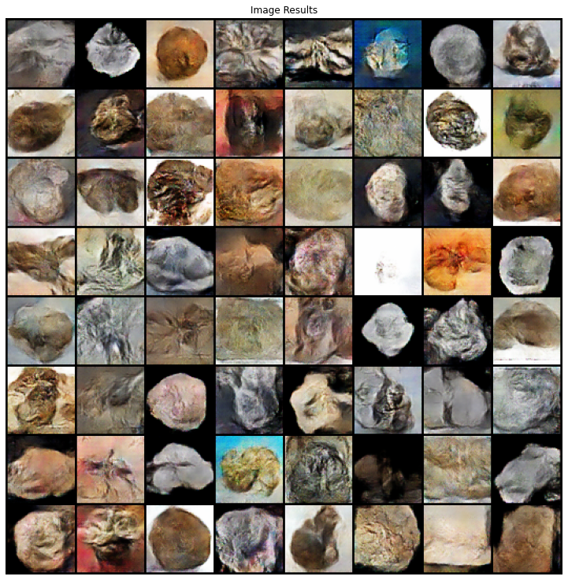

Generative Art is a type of artmaking in which the artist works with a system to create a work of art. These systems have included complex computer software, using dice to choose the colors of a painting, detailed instructions for completing a “happening” and many, many more. For this independent study Professor Ashenfelder and I worked together to create a curriculum that would focus on the movement’s history, theory and practice. For the history and theory part, I wanted to figure out a coherent art-theoretical basis for the discipline. Because it is less solidified as a movement in the art history field (compared to impressionism, abstract expressionism or many others), there was quite a bit of research to be done to connect the dots. This research culminated in a final paper which you can read below. On the practice side, I wanted to create a project that meshed my experience in Computer Science with what I have learned about Generative Art. This resulted in the Epiphyte Project below.
Initial Explorations
To get started on the initial Generative Art practice, I created some initial sketches using P5.js. This is a creative coding platform that allows visual work to be shown in the browser. Below are some of the most interesting results I found. The work on the left was shown at the University of Rochester’s Rettner Hall for several weeks.
Epiphyte Project
For the final project in the course, I wanted to do something interactive and larger-scale. This culminated in the Epiphyte Project. This project consists of a camera that monitors viewers position in the exhibition space and a large screen displaying a visualization that reflects their movements in the space. Occasionally, short clips of the captured video are displayed on-screen with overlays reflecting what the algorithm “sees.” The goal is to prompt thinking in viewers about the way they move through monitored spaces (such as the University Campus.) Just by walking around, one can provide a treasure trove of data for cameras and machine learning algorithms to digest, perhaps unknowingly. In this case, that just means your movement can be reflected back at you through a display on the ceiling, but hopefully it gets viewers thinking about how different contexts can have other implications. For example, crossing a street that does traffic-flow monitoring, checking out at an automated checkout booth at a grocery store, etc. The project is being exhibited on the ground floor of Rettner Hall on May 6, 2022.
In addition to exploring the practices of Generative Art, this course was concerned with the history and theory of the discipline. Throughout the beginning of the semester, I spent time searching for art-theoretical texts that applied to Generative Art. The most interesting was Jack Burnham’s 1968 essay “Systems Esthetics.” For the final essay in the course I applied the framework of this text to the recent developments in AI art, specifically Generative Adversarial Networks (GANs). From this starting point, I began to put together a manifesto of GAN art that identifies aspects that could make this new art form a bona fide aesthetic movement versus that which will restrict it to a passing fad.
You can read the essay here: Generative Art & Generative Adversarial Networks:The Future of the Movement
Explorations in GANs
After researching and writing quite a bit about GANs, I wanted to try my hand. Because of the high computational cost of creating these networks, I used some of the high performance machines in Rettner’s Digital Media Lab to train them. There was quite a steep learning curve for me, so the results are not very far past initial explorations. However, I’m quite happy that I was able to get anything interesting! My initial idea was to train the GAN on images of fossils. Below are some samples of the results of that work. The GIFs are illustrations of exploring the GAN’s latent space.

About Me
My name is Ryan Maciel and I am a senior majoring in Computer Science and minoring in Art History at the University of Rochester. I knew I was going to be working in Computer Science when I came to the University, but my interest in Art and Art History only started after taking courses with the department my freshman year. This independent study has allowed me to work both on the technical skills of creating and debugging complex creative coding programs as well as the rhetorical skills of researching, exploring and synthesizing art-theoretical works. I am so grateful to my advisor Professor Ashenfelder whose guidance and artistic encouragement was invaluable over the course of the semester, and Professor Zhu who offered technical advice while I was developing the Epiphyte project.